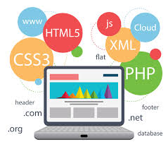

Specialisation
>
What does Web Design mean?
"Web design is a Web development process for creating a website that focuses on aesthetic factors like layout, user interface and other visual imagery in order to make the website more visually appealing and easy to use. Web design makes use of various programs and tools in order to achieve the intended look, such as Dreamweaver, Photoshop and many others. In order to create a winning design, Web designers need to think about their audience, the purpose of the website and the visual appeal of the design."
Text Source
Image Source
Understanding the Web Design.
"Web Design
Most websites are created by using a coded language called Hypertext Markup Language (HTML). In order for a website to be successfully displayed on the client browser, it needs to follow the rules of this language. HTML tags identify the website’s content for every page. Cascading Style Sheets (CSS) is then used to define the overall visual appearance of each page. The result is based on the combination of these elements. Hand coding can be taxing for some designers so some opt to use programs like Adobe Dreamweaver."
Text Source
Image Source
Why I have chosen Web Design?
 I have chosen Web Design as I am passionate about creating and editing them. I have many experiences with website creations as I have done few already using different software’s available, and I know that I would handle new knowledge as I am a fast learner with a positive attitude to learn new things related to website development. From the secondary school till now, I have spent many days playing with the functions and the layout of the website’s I was producing because I had so many ideas in which I could improve my website. I tried my best to make my project look good as possible and be fully interactive.
I have chosen Web Design as I am passionate about creating and editing them. I have many experiences with website creations as I have done few already using different software’s available, and I know that I would handle new knowledge as I am a fast learner with a positive attitude to learn new things related to website development. From the secondary school till now, I have spent many days playing with the functions and the layout of the website’s I was producing because I had so many ideas in which I could improve my website. I tried my best to make my project look good as possible and be fully interactive.
{kind=link}
{kind=link}